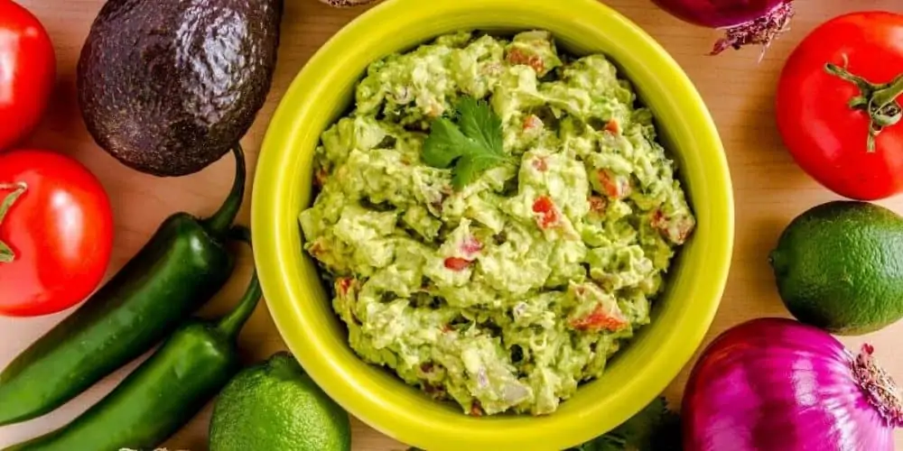

Guacamole

Irresistibly creamy and zesty homemade Guacamole, crafted from ripe avocados, diced tomatoes, fresh cilantro, and a hint of lime
With a burst of vibrant flavors our Guacamole will make every chip dipped a fiesta for your taste buds!
Ingredients:
- 3 ripe avocados
- 1 small onion, finely diced
- 2 tomatoes, diced
- 2 cloves garlic, minced
- 1 jalapeño pepper, seeded and minced (optional, for heat)
- Juice of 1 lime
- 1/4 cup fresh cilantro, chopped
- Salt and pepper to taste
Directions:
- Prepare the Avocados:
- Cut the avocados in half, remove the pit, and scoop the flesh into a mixing bowl.
- Use a fork to mash the avocados to your desired level of smoothness (some prefer chunky guacamole, while others like it smooth).
- Mix the Ingredients:
- Add the diced onion, diced tomatoes, minced garlic, and minced jalapeño (if using) to the mashed avocados.
- Squeeze the juice of one lime over the mixture.
- Add chopped cilantro and season with salt and pepper to taste.
- Assemble the Spam Musubi:
- Gently stir all the ingredients together until well combined.
- Taste and adjust the seasoning if needed.
- Serve your homemade guacamole with tortilla chips, as a topping for tacos, or alongside your favorite Mexican dishes.